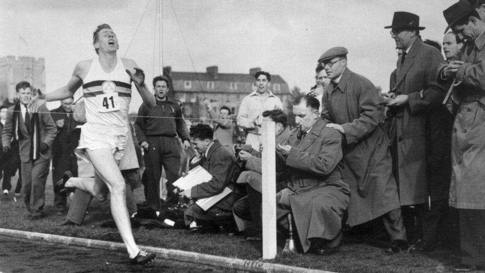
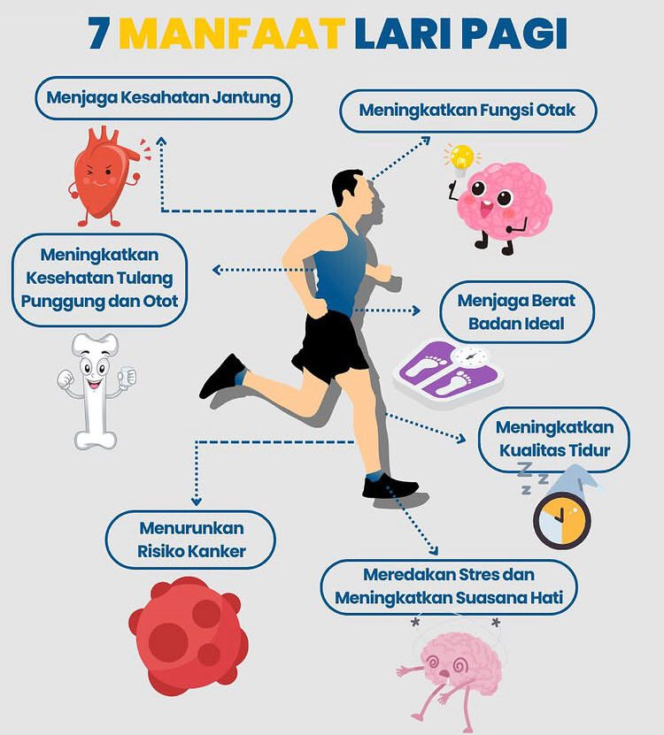

Pengantar
Lari bukan sekadar olahraga, tetapi juga simbol semangat dan ketekunan. Setiap langkah mencerminkan perjuangan seseorang untuk mencapai tujuan, baik dalam olahraga maupun kehidupan sehari-hari. Karena itu, lari menjadi salah satu cabang olahraga yang paling banyak digemari di dunia.
Sejarah Singkat Lari
Aktivitas berlari sudah dilakukan sejak zaman kuno. Pada masa Yunani Kuno, lari menjadi bagian utama dari Olimpiade pertama di tahun 776 SM. Di Indonesia sendiri, lari mulai populer setelah banyak diadakannya lomba maraton dan kegiatan olahraga masyarakat seperti “fun run” atau “color run”.
Macam-Macam Lari
- Lari Sprint: Lari jarak pendek dengan kecepatan penuh, biasanya 100–400 meter.
- Lari Estafet: Dilakukan secara bergantian oleh beberapa pelari dengan tongkat estafet.
- Lari Jarak Jauh: Menguji daya tahan tubuh dalam lintasan lebih dari 3.000 meter.
- Lari Maraton: Termasuk olahraga ekstrem dengan jarak tempuh hingga 42 km.
Teknik Dasar dalam Lari
Berikut beberapa teknik yang penting untuk diperhatikan agar hasil lari lebih maksimal:
- Posisi kepala dan punggung sejajar untuk menjaga keseimbangan.
- Langkah kaki diatur agar ritmis dan tidak terlalu lebar.
- Tangan diayunkan secara alami mengikuti irama langkah.
- Gunakan sepatu yang sesuai agar nyaman dan aman.
Peraturan Umum Perlombaan Lari
- Pelari harus tetap berada di lintasan yang telah ditentukan.
- Start dilakukan dengan aba-aba resmi dari wasit.
- Pemenang ditentukan berdasarkan waktu tercepat mencapai garis finis.
- Peserta yang melakukan start sebelum aba-aba dinyatakan diskualifikasi.
Perlengkapan dalam Olahraga Lari
- Sepatu Lari: Pilih yang ringan, fleksibel, dan sesuai bentuk kaki agar mengurangi risiko cedera.
- Pakaian Olahraga: Gunakan bahan yang menyerap keringat dan tidak menghambat gerak.
- Botol Air: Penting untuk menjaga hidrasi terutama saat lari jarak jauh.
- Jam atau Aplikasi Lari: Membantu memantau waktu, jarak, dan kecepatan.
Fakta Menarik
Tahukah kamu? Dalam satu jam berlari, tubuh manusia bisa membakar hingga 600 kalori! Selain itu, penelitian menunjukkan bahwa orang yang rutin berlari memiliki tingkat kebahagiaan yang lebih tinggi.
